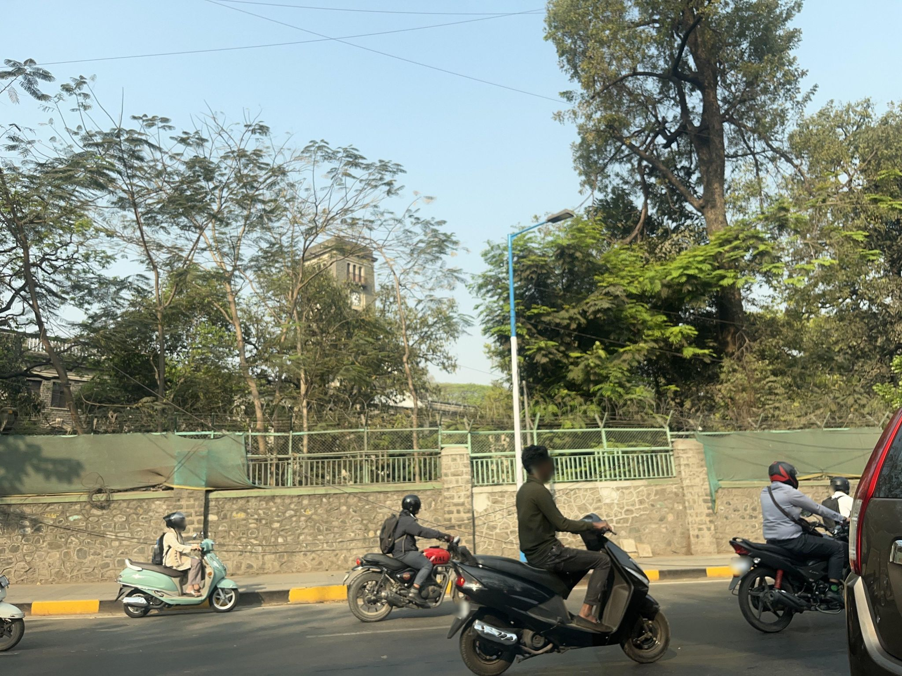
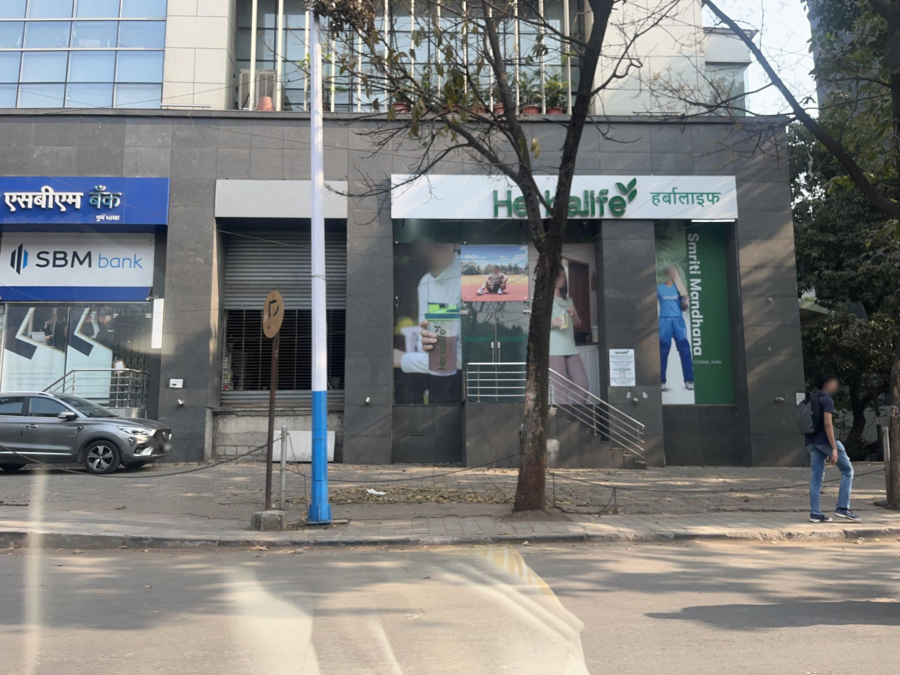
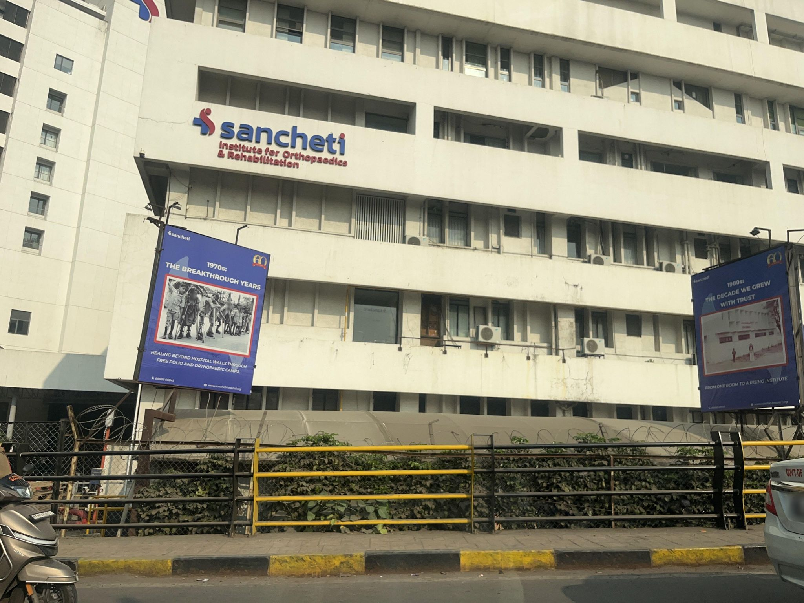
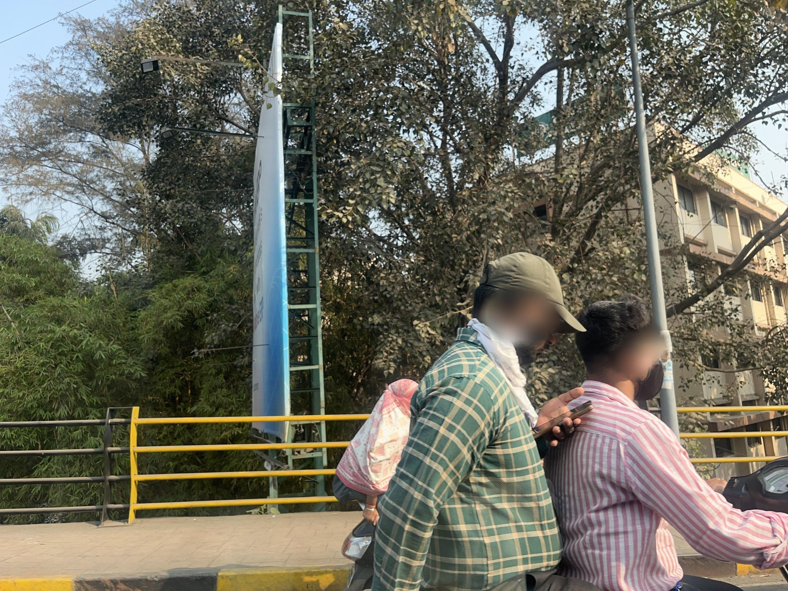
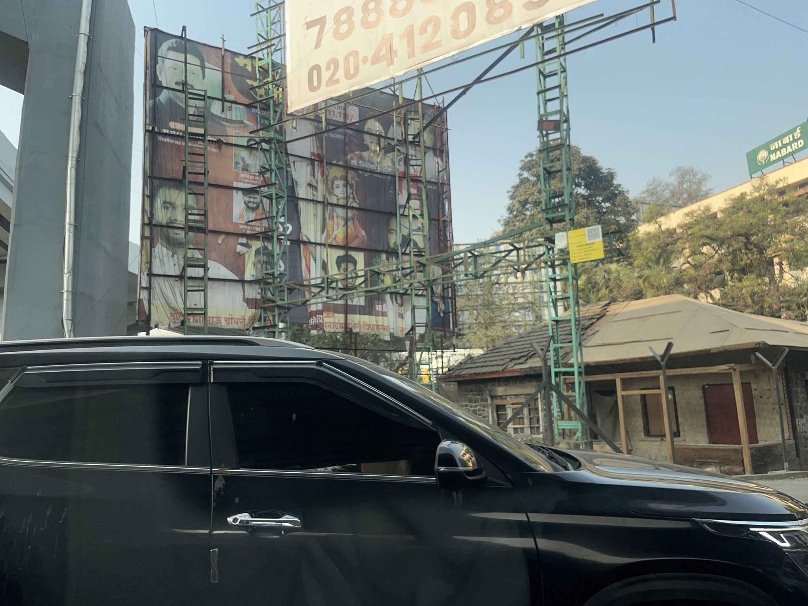
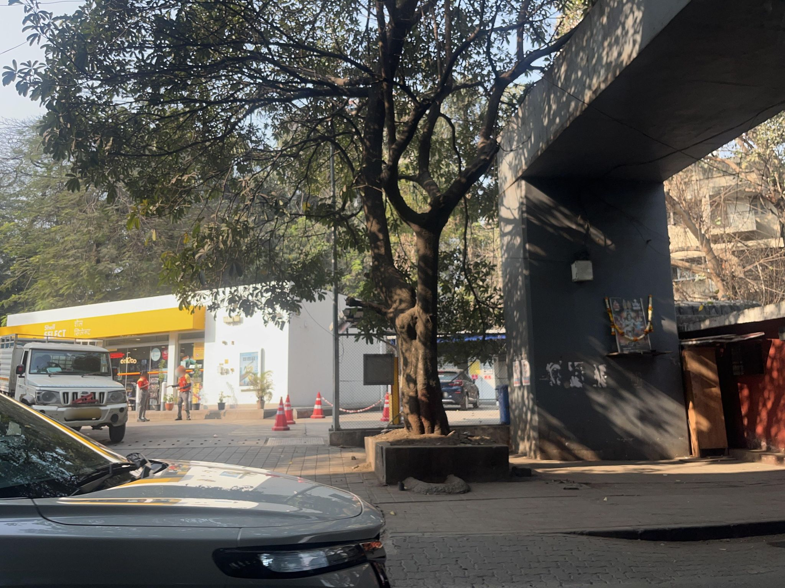
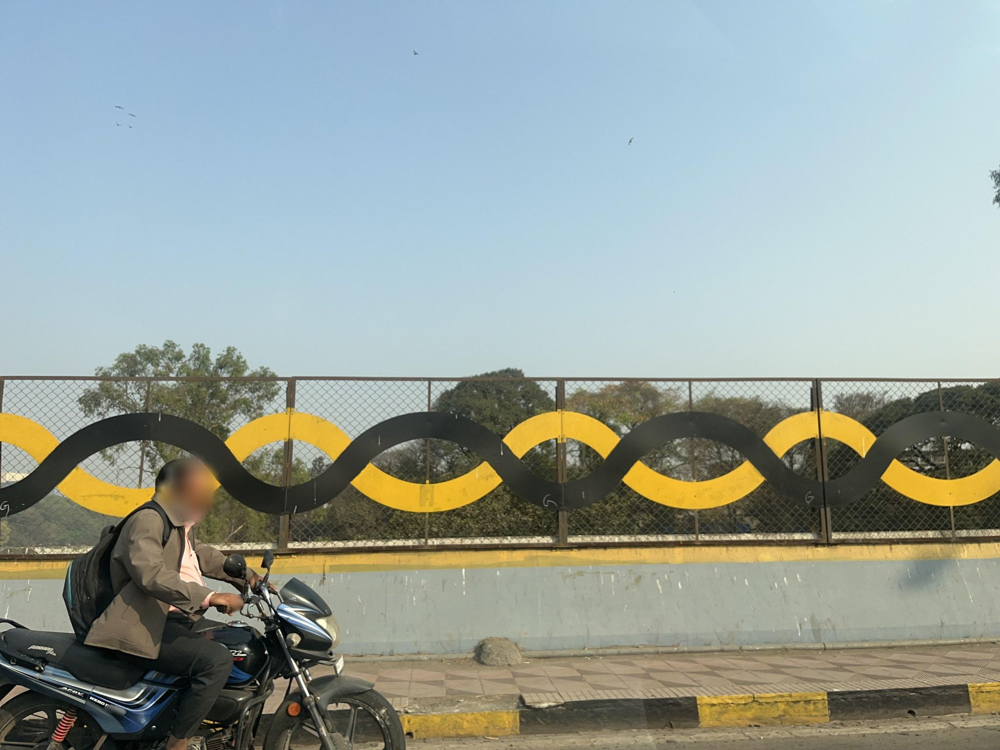

No clear target observed
2662777604092543
Tree-lined institutional frontage and roadway show no roadside dump or overflowing bin.
GEOCLEAN AI · MAPILLARY STREET-LEVEL METHOD V2
Nine distributed frames from the sequence containing the ambiguous workshop pile. This set narrows the review to that route; adjacent frames are reviewed separately.

Tree-lined institutional frontage and roadway show no roadside dump or overflowing bin.

A nearby motorcycle rider blocks most of the centre and right side of the frame.

Bank frontage and sidewalk show only a few loose leaves and scraps, with no target accumulation.

Hospital frontage and sidewalk are clear of any roadside dump or overflowing bin.

Two nearby riders fill most of the foreground and prevent a reliable roadside assessment.

A close car blocks much of the lower frame; no target is visible in the remaining commercial frontage.

Petrol-station entrance and shaded sidewalk show no roadside dump or overflowing bin.

Adjacent frames show the sacks, cardboard, and tarps stacked above and behind the auto-parts shop as stored material, rather than a roadside dump.

Median and sidewalk show no roadside dump or overflowing bin.